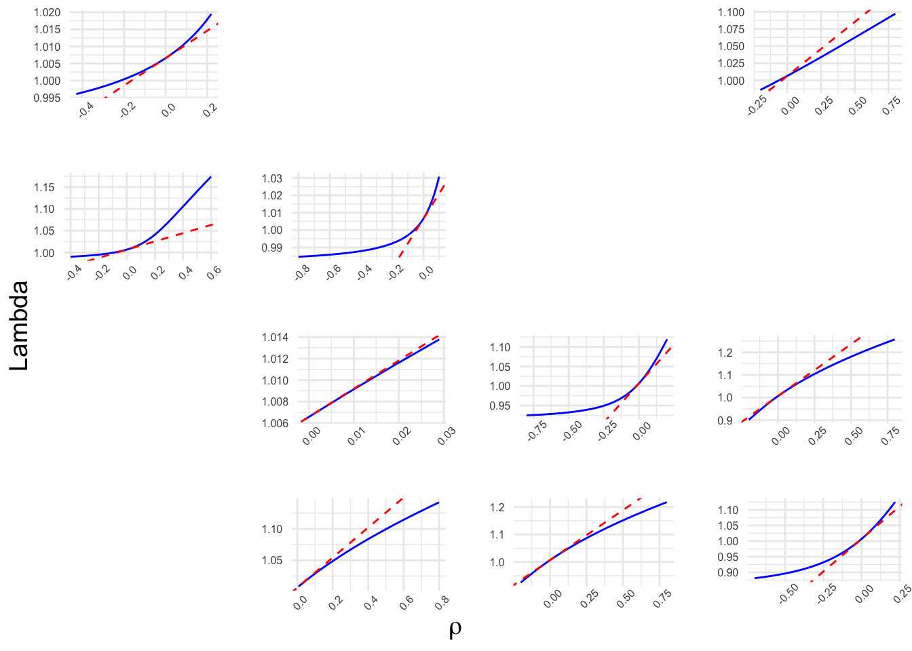

Código
library(popdemo)
library(tidyverse)
library(cowplot)Las funciones de transferencia describen cómo los cambios en una variable o estado demográfico se traducen en respuestas en otra escala del sistema. Este capítulo introduce las funciones de transferencia como herramientas conceptuales para vincular procesos demográficos, estados del ciclo de vida y respuestas poblacionales.
Autores: “Mariana Hernández-Apolinar, Tamara Ticktin, Edgar J. González y Raymond L. Tremblay”
En el contexto de la dinámica poblacional, las funciones de transferencia permiten formalizar la relación entre cambios en variables demográficas y sus efectos sobre otros componentes del sistema. Estas funciones describen cómo variaciones en procesos individuales, condiciones ambientales o estados del ciclo de vida se propagan a través de la estructura demográfica de la población.
En este capítulo se presenta el papel de las funciones de transferencia como herramientas para traducir información entre escalas y procesos dentro de los modelos poblacionales. Se discute cómo estas funciones pueden representar relaciones no lineales, umbrales o dependencias funcionales entre variables, y cómo su elección influye en la dinámica resultante del sistema.
A diferencia de los capítulos sobre simulaciones o análisis retrospectivos, este capítulo no se centra en proyectar trayectorias poblacionales completas, sino en comprender cómo las modificaciones en un componente específico del sistema se transfieren a otros componentes. Las funciones de transferencia constituyen un vínculo conceptual entre la estructura del ciclo de vida, las transiciones demográficas y las respuestas poblacionales observadas, y son especialmente útiles para integrar mecanismos biológicos, covariables ambientales y supuestos de manejo en modelos dinámicos más realistas. Las funciones de transferencia se construyen a partir de los procesos demográficos descritos en el capítulo sobre transiciones poblacionales. Las funciones de transferencia permiten incorporar mecanismos específicos en las simulaciones poblacionales descritas en el capítulo sobre métodos de simulaciones.
A continuación se describen distintos tipos de funciones de transferencia y su implementación en modelos de dinámica poblacional.
library(popdemo)
library(tidyverse)
library(cowplot)Los modelos de dinámica transitoria constituyen una alternativa para analizar la evolución de una población ante eventos de perturbación repentinos, ya sean de origen biótico (por ejemplo, depredación), abiótico (por ejemplo, huracanes) o antropogénico (por ejemplo, extracción) (Ezard et al., 2010). En el capítulo dedicado a la dinámica transitoria aprendimos a evaluar la respuesta inmediata o de corto plazo del crecimiento poblacional (\(\lambda\_{\max}\)) frente a la alteración de la estructura poblacional. Asimismo, mediante los índices de transferencia comparamos los cambios en la densidad poblacional cuando la estructura no se encuentra en una distribución estable, variando la proporción de individuos por categoría (por ejemplo, solo semillas o únicamente individuos adultos).
Continuando con los análisis de la dinámica transitoria en Lepanthes rubripetala realizados por Tremblay y colaboradores (Tremblay, Raventos & Ackerman, 2015), en este capítulo abordaremos los análisis de perturbación transitoria. Estos permiten proyectar cómo responde la dinámica poblacional transitoria ante la manipulación de las tasas vitales (supervivencia, reproducción y crecimiento) y de la estructura poblacional (abundancia relativa de individuos de diferentes edades, tamaños o estados) (Stott, 2016). Dichos análisis son herramientas clave para identificar qué individuos o tasas vitales son más relevantes para la dinámica a corto plazo. A partir de estos resultados, es posible definir estrategias de conservación y manejo más eficientes, que permitan alcanzar tasas de crecimiento planificadas para la especie de interés (\(\lambda = 1\), \(\lambda < 1\) o \(\lambda > 1\)), con el mínimo esfuerzo o costo (Stott, 2016).
En el modelo de crecimiento asintótico o de largo plazo, tratado en el capítulo sobre Elasticidad, se realizaron dos análisis de perturbación: sensibilidad y elasticidad, que estiman los efectos absolutos y relativos, respectivamente, de pequeñas perturbaciones sobre la tasa de crecimiento poblacional (\(\lambda\)) (Caswell, 1989). Sin embargo, estos análisis no son adecuados para evaluar la dinámica a corto plazo, ya que resultan poco eficientes para describir la respuesta poblacional ante perturbaciones de gran magnitud (Stott, Townley & Hodgson, 2011; Stott, Hodgson & Townley, 2012a). Además, dichos análisis asumen una relación lineal entre la perturbación y el crecimiento poblacional en modelos asintóticos, lo cual no refleja la respuesta no lineal característica de los modelos de dinámica transitoria (Stott, Townley & Hodgson, 2011; Stott, Hodgson & Townley, 2012a).
Dado que algunas poblaciones están sujetas a perturbaciones repentinas o intensas en ciertos periodos, su comportamiento poblacional puede ser altamente variable (Bierzychudek, 1999; Hastings, 2001). Por ello, existe un interés creciente en evaluar cuantitativamente la sensibilidad y la elasticidad no lineal (Stott, Hodgson & Townley, 2012a; Stott, 2016). Entre los métodos desarrollados para este fin, en este capítulo abordaremos el análisis de la función de transferencia aplicado a matrices de proyección poblacional.
Es importante destacar que los análisis de perturbación a largo plazo (Caswell, 1989; De Kroon, Van Groenendael & Ehrlén, 2000), explicados en el capítulo de Elasticidad, asumen que la tasa de crecimiento poblacional (\(\lambda\)) varía de manera lineal cuando se modifica algún elemento de la dinámica poblacional. Esto implica que un cambio en un componente del sistema se traduce en un cambio proporcional en la tasa de crecimiento. Esta suposición es válida cuando las perturbaciones son pequeñas, ya que el efecto sobre \(\lambda\) será igualmente reducido.
Sin embargo, cuando las perturbaciones son grandes, los efectos no necesariamente siguen un patrón lineal (Bialic-Murphy, Gaoue & Knight, 2018). En tales casos, los resultados derivados de los análisis tradicionales pueden ser subóptimos, llegando a subestimar o sobrestimar la importancia absoluta o relativa de las tasas vitales o de las categorías de la variable de estado sobre la tasa de crecimiento poblacional.
Por el contrario, los análisis de perturbación transitorios no presuponen este comportamiento lineal, lo que los hace más adecuados para evaluar la respuesta de una población ante eventos de perturbación de gran magnitud (Hodgson & Townley, 2004). Estos análisis permiten capturar la complejidad y la naturaleza no lineal de la dinámica transitoria, ofreciendo una visión más realista del comportamiento poblacional en escenarios de cambio abrupto.
Los análisis de perturbación aplicados a la dinámica poblacional transitoria se han desarrollado desde tres enfoques principales: diferenciación, perturbación directa y función de transferencia (Stott, 2016). En particular, Tremblay y colaboradores emplearon el enfoque basado en la función de transferencia para calcular la elasticidad no lineal (Tremblay, Raventos & Ackerman, 2015).
Este método fue incorporado al análisis poblacional por Hodgson y Townley en 2004 (Hodgson & Townley, 2004), adaptándolo del campo del control robusto de sistemas. Su aplicación en matrices de proyección poblacional ha demostrado ser altamente útil, ya que proporciona un marco sólido para determinar relaciones no lineales exactas entre perturbaciones en las tasas vitales y los cambios resultantes en la densidad y el crecimiento poblacional (Hodgson & Townley, 2004; Stott, 2016).
Además, la función de transferencia permite estimar cuantitativamente tanto la magnitud como el patrón temporal de la respuesta poblacional frente a distintos tipos de perturbaciones. Esta relación suele ser compleja y difícil de proyectar mediante otros métodos de análisis transitorio (Stott, 2016).
A continuación se presenta una descripción general de los componentes que integran el marco de análisis para la elasticidad no lineal basada en la función de transferencia, junto con las ecuaciones más relevantes utilizadas en el cálculo de estos parámetros. Para una explicación más detallada, se recomienda consultar los trabajos de Hodgson y Townley, así como los de Stott y colaboradores (Hodgson & Townley, 2004; Stott, Hodgson & Townley, 2012a). El análisis de elasticidad no lineal mediante la función de transferencia incorpora los siguientes elementos:
Al combinar estos componentes mediante multiplicaciones y sumas según la ecuación correspondiente, se obtiene una matriz que indica qué elementos han sido perturbados. En esta ecuación, \(e^T\) representa la transposición del vector \(e\), convirtiéndolo de columna a renglón. Este procedimiento permite estimar el efecto de una perturbación sobre la tasa de crecimiento poblacional a largo plazo (Stott, Hodgson & Townley, 2012a).
\[A_{\delta}= A + \delta de^T\]
En esta ecuación, la matriz \(A\) presenta propiedades emergentes, lo que implica un crecimiento asintótico o de largo plazo definido por \(\lambda_{max}\), acompañado de un eigenvector derecho (\(v\), valor reproductivo) y un eigenvector izquierdo (\(w\), estructura estable). Por su parte, la matriz perturbada \(A_{\delta}\) también exhibe propiedades emergentes propias: una tasa de crecimiento asintótico distinta, así como su propia estructura poblacional estable y valor reproductivo, determinados por el elemento perturbado y la magnitud de la perturbación (Stott, Hodgson & Townley, 2012a). El parámetro \(\delta\) representa los valores continuos de perturbación o cambios en los elementos de la matriz, afectando la tasa de crecimiento \(\lambda_{max}(A_\delta)\). La relación exacta entre \(\delta\) y \(\lambda_{max}\) se expresa mediante la siguiente ecuación:
\[\delta^{-1}=e^T\left(\lambda I-A\right)^{-1}d\]
Esta ecuación corresponde a las elasticidades no lineales; donde, \(I\) es la matriz identidad que presenta la misma dimensión de \(A\).
Los análisis de elasticidad no lineal realizados por Tremblay y colaboradores (Tremblay, Raventos & Ackerman, 2015) para Lepanthes rupripetala se desarrollaron mediante dos enfoques principales:
El primer método permite estimar el impacto no lineal de una perturbación específica sobre la tasa de crecimiento poblacional (\(\lambda\)), mientras que el segundo evalúa dicho efecto sobre la inercia poblacional, es decir, la capacidad de la población para alcanzar su estructura estable tras una perturbación (Stott, Hodgson & Townley, 2012a).
Ambos análisis se implementaron utilizando el paquete popdemo, cuyo código fue desarrollado por Stott y colaboradores (Stott, Hodgson & Townley, 2012b; Stott, Hodgson & Townley, 2012a).
De acuerdo con Stott y colaboradores (Stott, Hodgson & Townley, 2012b), la implementación de los métodos de análisis mediante función de transferencia requiere disponer de la siguiente información:
Como se indicó previamente, se utilizarán los datos correspondientes a la población 1 de Lepanthes rupripetala, obtenidos del estudio de Tremblay y colaboradores (Tremblay, Raventos & Ackerman, 2015). La matriz denominada Lr1 describe las transiciones entre las siguientes categorías: plántula (PL), juvenil (J), adulto no reproductivo (NR) y adulto reproductivo (AR).
En el siguiente bloque se muestra la implementación en R, donde la función matrix() se emplea para construir la matriz de transición, y el objeto n0 representa el vector con la estructura inicial observada. La matriz resultante evidencia que las probabilidades más altas corresponden a la permanencia en los estados juvenil, no reproductivo y reproductivo, con valores de 0.84, 0.79 y 0.75, respectivamente.
# Vector original
n0 <- c(0, 46, 38, 82)
#Capturar los datos de la matriz para L. rubripetala (Tremblay et al. 2015)
Lr1 <- matrix(c(0.4324, 0, 0, 0.146,
0.3784, 0.8459, 0, 0,
0, 0.0034, 0.7954,0.2300,
0, 0.0890, 0.1841,0.7510), byrow=TRUE,ncol=4)estadios <- c("PL", "J", "NR", "AR")
colnames(Lr1) <- rownames(Lr1) <- estadios
Lr1 <- matrix(Lr1[1:4, ], nrow = 4, dimnames = list(estadios, estadios))
Lr1 PL J NR AR
PL 0.4324 0.0000 0.0000 0.146
J 0.3784 0.8459 0.0000 0.000
NR 0.0000 0.0034 0.7954 0.230
AR 0.0000 0.0890 0.1841 0.751La matriz de elasticidad lineal se obtiene mediante el comando elas del paquete popdemo en R. Como se explicó en el capítulo sobre Elasticidad, la suma de todos los elementos de esta matriz es igual a uno, lo que facilita su interpretación.
En este caso, la permanencia en el estado adulto no reproductivo (NR) presenta el mayor impacto proporcional sobre la tasa de crecimiento poblacional, con un valor de 0.313. Esto significa que una pequeña perturbación en este elemento de la matriz produciría un cambio aproximado de 0.313 en \(\lambda\). Por el contrario, la transición de adulto no reproductivo a reproductivo (R) tiene un impacto mucho menor, con un valor de 0.083.
Es importante destacar que los cambios reflejados en la matriz de elasticidad son lineales y, por lo tanto, su validez se limita a escenarios donde las perturbaciones son pequeñas.
# Matriz de elasticidad
elasticidad <- round(elas(Lr1), digit = 3)
elasticidad PL J NR AR
PL 0.017 0.000 0.000 0.023
J 0.023 0.120 0.000 0.000
NR 0.000 0.001 0.316 0.083
AR 0.000 0.022 0.084 0.311En una matriz de transición, la selección de los elementos a perturbar se realiza generalmente a partir de aquellos que presentan los valores más altos en la matriz de elasticidad, ya que son los que influyen de manera más determinante en \(\lambda_{\max}\). No obstante, es importante señalar que la función de transferencia puede aplicarse a cualquier elemento de la matriz, independientemente de su valor o influencia sobre el crecimiento poblacional (Stott, Hodgson & Townley, 2012b).
De acuerdo con los resultados del inciso anterior, la permanencia en los estados adulto no reproductivo (NR) y adulto reproductivo (AR) mostró las elasticidades más elevadas (0.313 y 0.311, respectivamente). Para evaluar el efecto de perturbaciones en estas transiciones sobre la dinámica poblacional transitoria, cada elemento se introduce de forma individual en el modelo, considerando su ubicación en la matriz mediante los vectores \(d\) (columna) y \(e\) (renglón) (Stott, Hodgson & Townley, 2012b). Estos vectores representan el tránsito de un individuo promedio desde un estado inicial (\(d\)) hacia otro (\(e\)) durante el periodo de estudio.
En la matriz de transición de Lepanthes rupripetala (dimensión 4 X 4), la permanencia (estasis) en el estado de adulto no reproductivo corresponde al elemento \([3,3]\). Para evaluar el efecto de una perturbación en este elemento sobre \(\lambda_{\max}\), se especifica en el modelo mediante los vectores:
\[d = c(0, 0, 1, 0), \quad e = c(0, 0, 1, 0)\]
Siguiendo la misma lógica, si se desea conocer el efecto sobre \(\lambda_{\max}\) de una perturbación en la transición de adulto no reproductivo a adulto reproductivo (\([4,3]\)), se utiliza:
\[d = c(0, 0, 1, 0), \quad e = c(0, 0, 0, 1)\]
Es importante recordar que la ubicación de los elementos en la matriz se interpreta de izquierda a derecha, donde el primer índice corresponde a la columna (\(d\)) y el segundo al renglón (\(e\)).
La magnitud de la perturbación corresponde a un intervalo de valores que determina cuánto se desea modificar las tasas vitales. En el paquete popdemo, esta magnitud se define mediante la variable prange (Stott, Hodgson & Townley, 2012b).
Para el elemento \([3,3]\) de la matriz de L. rupripetala, la magnitud de la perturbación se establece considerando los valores de probabilidad presentes en la matriz de proyección poblacional de la especie:
Para calcular la perturbación máxima en la columna 3, se parte del supuesto de que la probabilidad máxima de estasis o cambio de estado (crecimiento o decrecimiento) desde la categoría 3 es igual a 1. Bajo esta condición, no existiría mortalidad en las transiciones desde dicha categoría. Por lo tanto, la máxima perturbación posible corresponde a la sobrevivencia del 100% de los individuos en la categoría 3. Así, si restamos a 1 la suma de los valores de permanencia y transición de la columna 3, obtenemos la magnitud máxima de perturbación.
1 - (0.7954 + 0.1841)[1] 0.0205La perturbación mínima corresponde al valor negativo de la celda de interés. Por ejemplo, para el elemento \([3,3]\), cuyo valor original es 0.7954, la perturbación mínima sería -0.7954. Esto se debe a que restar 0.7954 al valor original anularía completamente la permanencia en esa categoría, representando la máxima mortalidad posible en dicha celda. Por lo tanto, la magnitud de perturbación para el elemento \([3,3]\) de L. rupripetala se encuentra entre la perturbación mínima y la máxima. Dentro de este intervalo, la respuesta poblacional se evalúa de manera proporcional y creciente en pasos definidos. En nuestro ejemplo, el incremento se establece en 0.01, valor que corresponde al cuarto componente del argumento prange.
Posteriormente, en la gráfica que se genera para analizar la respuesta transitoria de la población, el eje X representa la magnitud de la perturbación, variando desde la perturbación mínima hasta la máxima en intervalos de 0.01.
#Intervalo de la perturbación:
prange = seq(-0.7954, 0.0205, 0.01)Una vez definidos los cuatro los elementos de nuestra lista, procederemos a calcular la elasticidad no lineal para nuestra población a través de los dos métodos de análisis de transferencia.
El efecto de una perturbación sobre \(\lambda\) mediante el método de función de transferencia se evalúa utilizando las funciones tfa_lambda o tfam_lambda del paquete popdemo. Ambas fueron empleadas por Tremblay y colaboradores (Tremblay, Raventos & Ackerman, 2015) para modelar la relación no lineal exacta entre una perturbación -o manipulación de una tasa vital— y el crecimiento poblacional (Stott, Hodgson & Townley, 2012a). A continuación se describen las diferencias entre ambas funciones:
Esta función calcula la elasticidad no lineal para cada elemento distinto de cero en la matriz AAA y genera una gráfica individual para cada elemento perturbado.
Por ejemplo, en la población de L. rupripetala, donde existen 10 celdas con valores distintos de cero, se pueden generar hasta 10 gráficas. La selección de las celdas a perturbar puede basarse en los valores más altos de la matriz de elasticidad, dado que cualquier cambio —grande o pequeño— en estos elementos tendrá un impacto significativo sobre \(\lambda\).
Esta función permite estimar automáticamente la elasticidad no lineal para todos los elementos distintos de cero en la matriz poblacional. La representación gráfica del efecto sobre \(\lambda\) para todos los elementos se obtiene mediante la función tfmat, que genera las gráficas de forma automática.
Con base en las proyecciones realizadas por Tremblay y colaboradores (Tremblay, Raventos & Ackerman, 2015), se detalla a continuación la aplicación de las funciones tfa_lambda y tfam_lambda. Para este propósito, se presenta el código correspondiente que estima la elasticidad no lineal en L. rupripetala mediante el análisis de función de transferencia.
a Elasticidad No Lineal: Perturbación por Elemento
Utilizando la función tfa_lambda, se perturbaron cuatro elementos de la matriz de transición de manera individual para evaluar su efecto sobre la tasa de crecimiento poblacional. La selección se realizó considerando el valor más alto en la matriz de elasticidad y otros aspectos relevantes del ciclo de vida de la especie: crecimiento, retroceso y reproducción.
Los elementos analizados fueron:
Se recomienda que los seis elementos restantes también sean evaluados para comprender mejor el procedimiento y facilitar la interpretación. En la sección Uso de ggplot2 se agrupan las 10 gráficas resultantes en una matriz de figuras.
Implementación del Análisis
Para calcular la elasticidad no lineal en L. rupripetala, se emplean los cuatro componentes explicados en la sección Aplicación de los métodos de análisis de función de transferencia. Estos se integran en el código mostrado en el siguiente recuadro. Como argumentos de la función tfa_lambda, se incluyen:
prange = seq(-0.7954, 0.0205, 0.01).Interpretación Gráfica
Para comprender cómo la transición del ciclo de vida se ve afectada por la perturbación, se grafica la respuesta sobre \(\lambda\). En la gráfica:
La línea negra continua representa el comportamiento de la elasticidad no lineal estimada mediante el análisis de función de transferencia.
Con la función abline, se añade la tendencia lineal de la perturbación sobre \(\lambda\), cuya pendiente indica la sensibilidad del cambio.
Los resultados muestran que la permanencia en el estado no reproductivo ejerce un efecto no lineal sobre \(\lambda\), con una respuesta drástica incluso ante perturbaciones pequeñas. La población responde en incrementos proporcionales de 0.01, desde el nivel mínimo hasta el máximo de perturbación. Según la gráfica, una perturbación menor provoca un cambio radical en el crecimiento poblacional. Mientras la sensibilidad lineal sugiere un descenso constante, la función de transferencia indica que, tras un descenso inicial, la población alcanza un punto de estabilización cercano a \(\lambda \approx 0.95\).
# Vector original
nLr0 <- c(0, 46, 38, 82)
# PERTURBACIÓN DEL VECTOR
#Entrada de la matriz a(3,3): permanencia adultos no reproductivos a adultos no reproductivos
#Se especifica qué elementos son fecundidades y cuáles transiciones en la MPP.
tf6 <- tfa_lambda(Lr1, d = c(0, 0, 1, 0), e = c(0, 0, 1, 0), prange = seq(-0.8, 0.2, 0.01))
#Gráfica de la dinámica poblacional
plot(tf6, ann = FALSE)
title(main = "Dinámica poblacional (Adultos No rep - Adultos No rep)", ylab = "Lambda", xlab = "p")
#Cálculo de lambda-max:
lambda6 <- Re(eigen(Lr1)$values[1])
#Cálculo de la sensibilidad
sens6 <- tfs_lambda(Lr1, d = c(0,0,1,0),
e = c(0,0,1,0))
#Agregar la línea, especificando el intercepto y la pendiente
abline(lambda6, sens6, lty = 2, col = "red")
b Elasticidad No Lineal: Efecto del Crecimiento de la Fase Juvenil a Reproductiva [4,2] sobre λ
En este y los siguientes ejemplos, el análisis se centra en la estructura de perturbación y la magnitud de la perturbación, ya que son los componentes que varían. La perturbación correspondiente al crecimiento o tránsito de la fase juvenil a adulto reproductivo [4,2] se define mediante los siguientes vectores y rango:
d = c(0, 1, 0, 0)e = c(0, 0, 0, 1)prange = seq(0, 0.89, 0.01)Los resultados indican que la perturbación en esta transición ejerce un efecto no lineal sobre λ. Este efecto es positivo para el crecimiento poblacional, especialmente en niveles altos de perturbación.
Cuando la perturbación es menor a 0.2, el comportamiento no difiere significativamente del esperado bajo elasticidad lineal, donde las perturbaciones son pequeñas. Por lo tanto, en este rango, el impacto sobre λ es prácticamente nulo.
En cambio, a medida que la magnitud de la perturbación aumenta, el efecto sobre la tasa de crecimiento se intensifica, reflejando la naturaleza no lineal del sistema.
#Entrada de la matriz a(4,2): juveniles a adultos
tf5 <- tfa_lambda(Lr1, d = c(0,1,0,0), e = c(0,0,0,1), prange = seq(0,0.89,0.01))
#Gráfica de la dinámica poblacional
plot(tf5, ann = FALSE)
title(main = "Dinámica poblacional (Juveniles - Adultos)", ylab = "Lambda", xlab = "p")
#Cálculo de lambda-max:
lambda5 <- Re(eigen(Lr1)$values[1])
#Cálculo de la sensibilidad
sens5 <- tfs_lambda(Lr1, d = c(0, 1, 0, 0),
e = c(0, 0, 0, 1))
#Agregar la línea, especificando el intercepto y la pendiente
abline(lambda5, sens5, lty = 2, col = "red")
c) Elasticidad no lineal: efecto del retroceso en estado de adulto a no reproductivo [3,4] sobre \(\lambda\).
En la perturbación correspondiente al retroceso o transición de la fase adulta a adulto no reproductivo [3,4], la ubicación vectorial se define como:
d = c(0, 0, 0, 1)e = c(0, 0, 1, 0) y la magnitud de la perturbación se establece en:prange = seq(0, 0.77, 0.01)Los resultados indican que el efecto de esta perturbación sobre λ es no lineal en niveles altos de perturbación, mientras que para perturbaciones pequeñas (< 0.2) el comportamiento no difiere significativamente del esperado bajo elasticidad lineal.
A medida que la magnitud de la perturbación aumenta, se observa un efecto positivo sobre la tasa de crecimiento poblacional, lo que refleja la importancia de esta transición en la dinámica transitoria.
#Entrada de la matriz a(3,4): adultos reproductivos a NR
tf9 <- tfa_lambda(Lr1, d = c(0, 0, 0, 1),
e = c(0, 0, 1, 0),
prange = seq(-0.2, 0.77, 0.01))
#Gráfica de la dinámica poblacional
plot(tf9, ann = FALSE)
title(main = "Dinámica poblacional (Adultos reproductivos - NR)", ylab = "Lambda", xlab = "p")
#Cálculo de lambda-max:
lambda9 <- Re(eigen(Lr1)$values[1])
#Cálculo de la sensibilidad
sens9 <- tfs_lambda(Lr1, d = c(0, 0, 0, 1),
e = c(0, 0, 1, 0))
#Agregar la línea, especificando el intercepto y la pendiente
abline(lambda9, sens9, lty = 2, col = "red")
d) Elasticidad no lineal: efecto de la contribución reproductiva del estado de adulto a plántula [1,4] sobre \(\lambda\).
En la perturbación correspondiente a la contribución reproductiva de adultos hacia plántulas ([1,4]), la ubicación vectorial se define como:
d = c(0, 0, 0, 1)e = c(1, 0, 0, 0) y la magnitud de la perturbación se establece en:prange = seq(-0.150, 0.85, 0.01)Los resultados indican que la perturbación en esta transición produce un efecto lineal sobre λ. Sin embargo, la pendiente asociada a la elasticidad no lineal es menor en comparación con la sensibilidad lineal, lo que sugiere que el impacto de esta transición sobre la tasa de crecimiento poblacional es más limitado de lo que se esperaría bajo un modelo estrictamente lineal.
#Entrada de la matriz a(1,4): adultos reproductivos a plántulas
tf8 <- tfa_lambda(Lr1, d = c(0,0,0,1),
e = c(1,0,0,0),
prange = seq(-0.15,0.85,0.01))
#Gráfica de la dinámica poblacional
plot(tf8, ann = FALSE)
title(main = "Dinámica poblacional (Adultos reproductivos - Plántulas)", ylab = "Lambda", xlab = "p")
#Cálculo de lambda-max:
lambda8 <- Re(eigen(Lr1)$values[1])
#Cálculo de la sensibilidad
sens8 <- tfs_lambda(Lr1, d = c(1,0,0,0),
e = c(0,0,0,1))
#Agregar la línea, especificando el intercepto y la pendiente
abline(lambda8, sens8, lty = 2, col = "red")
La función tfam_lambda permite estimar automáticamente la elasticidad no lineal para todos los elementos distintos de cero en una matriz poblacional, mientras que tfmat_lamb genera las gráficas correspondientes de manera automática. Stott y colaboradores (Stott, Hodgson & Townley, 2012b) recomiendan el uso de tfam_lambda debido a la dificultad que implica definir manualmente la magnitud de la perturbación; por ello, este método resulta más práctico. Sin embargo, es necesario considerar las siguientes limitaciones:
Estas condiciones pueden generar inconsistencias, ya que las características de la especie analizada no siempre coinciden con los criterios establecidos por el autor del código. Por ejemplo, en la definición de elementos en la matriz \(A\), el código asume que todos los valores del primer renglón corresponden a fecundidad (\(F\)). Sin embargo, en el caso de L. rupripetala, el elemento [1,1] representa una probabilidad de transición (\(P\)), no una fecundidad. Este problema se resuelve incorporando la función elementtype, que permite especificar el tipo de cada elemento.
Respecto a la magnitud de la perturbación, los valores predefinidos por el autor (Flim = (-1, 10) y Plim = (-1, 10)) no pueden modificarse. Esto implica que todos los elementos se perturban en el mismo intervalo, lo cual es poco realista, ya que cada elemento debería tener un rango específico según su naturaleza. En particular, el límite superior de Plim puede generar valores mayores a 1, lo que excede la probabilidad máxima permitida en una columna de la matriz \(A\).
Por estas razones, para controlar mejor las variables del modelo y adaptarlo a la especie de estudio, se recomienda utilizar la función tfa_lambda y agrupar las gráficas manualmente, de forma similar a tfmat_lamb. En la última sección del capítulo se presenta el código correspondiente en ggplot2.
tfam_lambdaEn el ejemplo aplicado a L. rupripetala, se obtuvieron los siguientes resultados al ejecutar tfam_lambda junto con la función elementtype. Se generaron 10 gráficas, correspondientes a los 10 elementos distintos de cero en la matriz \(A\). Cada gráfica se ubica en la posición del elemento analizado. Los resultados muestran que nueve de estas perturbaciones tienen un efecto no lineal sobre \(\lambda\). En las gráficas, los valores del eje X (intervalo de perturbación), \(p\) del eje Y (\(\lambda\)) no comparten la misma escala. Las gráficas incluyen únicamente la tendencia de la elasticidad no lineal, aunque es posible añadir la línea de sensibilidad asintótica mediante la función \(abline\), como se hizo en los ejemplos anteriores.
En cuanto a la interpretación, se observa que la permanencia en el mismo estado de desarrollo no sigue un patrón lineal. Además, en cuatro elementos, aumentar la perturbación por encima de ± 0.1 genera un efecto positivo sobre \(\lambda\). El retroceso de juvenil a no reproductivo muestra un efecto lineal y positivo sobre \(\lambda\). Aunque el efecto no siempre es estrictamente lineal, el impacto positivo en el crecimiento poblacional se mantiene en las transiciones: plántula a juvenil, juvenil a adulto reproductivo, adulto no reproductivo a reproductivo, y en la contribución reproductiva hacia plántulas.
n0 <- c(0, 46, 38, 82)
etype<-matrix(c("P", "F", "F", "F",
"P", "P", "P", "P",
"P", "P", "P", "P",
"P", "P", "P", "P"), 4,4)
tfmat_lamb=tfam_lambda(Lr1, elementtype = etype)
plot(tfmat_lamb)
Tras una perturbación repentina en la estructura poblacional, pueden producirse cambios en la densidad de individuos que modifican la forma en que la población persiste a corto plazo, fenómeno conocido como inercia poblacional. Esto ocurre porque, después de la perturbación, las poblaciones presentan un comportamiento inestable que genera patrones de crecimiento distintos a los esperados en una población equivalente con distribución estable de estado o tamaño, en adelante denominada población estable (Stott, Hodgson & Townley, 2012a).
Como se explicó en el capítulo sobre Elasticidad, una población estable crece de manera exponencial a una tasa constante (\(\lambda\)) y mantiene una estructura proporcionalmente invariable. Este patrón se altera cuando la población no está en equilibrio estable: el crecimiento puede fluctuar y, a corto plazo, producir densidades superiores o inferiores a las previstas bajo una distribución estable. De igual forma, la estructura poblacional deja de mantenerse proporcionalmente constante (Stott, Hodgson & Townley, 2012a). La función de transferencia permite calcular el efecto de la elasticidad no lineal sobre la inercia poblacional a partir de la matriz de transición de la especie y de los cambios en el vector de estructura poblacional. Este cálculo se expresa como el cociente entre la densidad a corto plazo de una población no estable y la densidad correspondiente a una población estable. Su estimación se basa en una extensión de la segunda ecuación del método de función de transferencia aplicado a \(\lambda\) (Koons, Holmes & Grand, 2007; Stott, Hodgson & Townley, 2012a), presentada previamente en este capítulo. La extensión se formula de la siguiente manera:
\[ \mathbf{P}_\infty = \frac{\mathbf{v}^\top \hat{\mathbf{n}}_0 \, \|\mathbf{w}\|_1}{\mathbf{v}^\top \mathbf{w}} \] Donde
\(\mathbf{P}_\infty\)
Representa la población proyectada en el equilibrio asintótico (cuando el sistema alcanza su estructura estable).
\(\mathbf{v}^\top\)
Es el vector propio izquierdo transpuesto asociado al eigenvalor dominante de la matriz de proyección. Pondera las estados según su contribución al crecimiento.
\(\hat{\mathbf{n}}_0\)
Es el vector inicial de población normalizado, que indica la distribución inicial entre clases o estados.
\(\mathbf{w}\)
Es el vector propio derecho, que describe la distribución estable por estados cuando la población crece a la tasa asintótica.
\(\|\mathbf{w}\|_1\)
Es la norma L₁ del vector (\(\mathbf{w}\)), equivalente a la suma de sus componentes. Se usa para escalar el vector estable.
\(\mathbf{v}^\top \mathbf{w}\)
Es el producto interno entre los eigenvectores izquierdo y derecho, utilizado para normalizar la expresión.
Como resultado de la ecuación, se generan valores >1 y <1 que corresponden al valor de la inercia poblacional a corto plazo. La inercia >1 indica que la población crece y se mantiene grande, mientras que los valores <1 indican que decrece y se mantiene pequeña a corto plazo (Tremblay, Raventos & Ackerman, 2015).
El efecto de una perturbación en la inercia poblacional a través del método de función de transferencia se evalúa aplicando las funciones tfa_inertia o tfam_inertia del paquete popdemo de R (Stott, Hodgson & Townley, 2012a). La primera calcula la inercia poblacional al modificar un elemento de la estructura poblacional, mientras que la segunda estima este parámetro al modificar todos los elementos de la estructura poblacional de forma automática.
Tremblay y colaboradores (Tremblay, Raventos & Ackerman, 2015) usaron las funciones tfa_inertia y tfam_inertia para modelar la relación no lineal entre una perturbación, o manipulación en la estructura poblacional, y la inercia del crecimiento poblacional de L. rupripetala. Dado que la persistencia de una población puede evaluarse bajo distintos escenarios si se modifica un elemento de la matriz de transición, estos autores evaluaron la inercia poblacional considerando los siguientes supuestos:
Un caso específico del ciclo de vida, por ejemplo el elemento con la elasticidad más alta.
Cambios en todas y cada una de los elementos de la matriz \(A\).
Cambios en la última y la primera categoría de estado en la población.
Tomando en cuenta la estructura estable inicial, que evalúa la persistencia de la población si se encontrara en el equilibrio (Tremblay, Raventos & Ackerman, 2015).
Con base en estos escenarios, a continuación se describe cómo aplicar tfa_inertia y tfam_inertia.
El primer escenario: un caso específico del ciclo de vida, permitirá ejemplificar el uso de la función tfa_inertia. En este se evalúa el efecto de la estasis o permanencia en el estado no reproductivo [3,3] sobre la inercia poblacional y fue seleccionado porque presenta el valor más alto de elasticidad. En el cálculo se usan los siguientes argumentos para esta función: la matriz de transición de la población Lr1; indicamos el vector de la estructura poblacional, la estructura de perturbación (elemento de la matriz a perturbar) y la magnitud de la perturbación la estructura de perturbación o prange = seq(-0.7954, 0.0205, 0.01). En el recuadro se presenta el código correspondiente para su estimación.
Como resultado se genera una gráfica en la que se aprecia el comportamiento de la inercia o persistencia poblacional a corto plazo ante una perturbación. Esta respuesta se da de forma proporcional y de manera creciente, teniendo como puntos extremos en el eje x la perturbación mínima y la máxima. La línea roja representa la elasticidad a perturbación cero y la línea negra la función de transferencia de la inercia poblacional ante cambios en la permanencia en la fase de adulto no reproductivo.
La tendencia de la elasticidad no lineal sugiere que cualquier aumento en la estasis en la categoría de adulto no reproductivo provocará una disminución en el valor de la inercia poblacional a corto plazo. Tremblay y colaboradores (Tremblay, Raventos & Ackerman, 2015) presentan en la figura 4 los resultados de los casos en que las elasticidades fueron mayores.
n0 <- c(0, 46, 38, 82)
tf2<-tfa_inertia(Lr1, vector=n0, d=c(0,0,1,0), e=c(0,0,1,0), prange=seq(-0.8,0.2,0.01)) # el efecto de perturbación de la transición de no reproductivo a adulto reproductivo
plot(tf2, main="Inercia poblacional",cex.axis=1.4,cex.lab=1.5) # gráfica de la inercia poblacional
inertia<-inertia(Lr1, vector=n0)
sens2<-tfs_inertia(Lr1, vector=n0, d=c(0,0,1,0), e=c(0,0,1,0), tolerance=1e-5) # el efecto de sensibilidad de la inercia poblacional
abline(inertia, sens2, lty=2, col="red") # Para añadir el efecto lineal 
En el cálculo de inercia poblacional se puede optar por evaluar los efectos de todas las entradas de la matriz con valor >0. La función matA ofrece esta opción y su uso se ejemplificará a través de los tres escenarios faltantes (b, c y d).
En este cálculo de la inercia poblacional se usan los siguientes argumentos para esta función: la matriz de transición de la población Lr1; el vector de la estructura poblacional, y, al igual que en tfam_lambda, se hacen los ajustes de los tipos de elementos en la matriz con elementtype y se mantienen los límite mínimo y máximo de las funciones Plim y Flim definidos por el autor del código.
A continuación se proyecta la persistencia de L. rupripetala para los tres escenarios faltantes: Perturbación de todo el ciclo de vida, concentración de individuos en la última y primera categoría, y, la estructura estable inicial.
A excepción del tránsito de adulto no reproductivo a reproductivo, el tránsito a un estado superior tiene un efecto positivo en la inercia poblacional. Lo mismo sucede con la retrogresión de adultos reproductivos a no reproductivos y en la contribución reproductiva de adultos a plántulas.
#Definir márgenes
par(mfrow = c(4,4))
par(mfg = c(1,1))
#Gráficas de la función de transferencia de la inercia en el ciclo de vida de L. rubripetala (población 1)
etype<-matrix(c("P", "F", "F", "F",
"P", "P", "P", "P",
"P", "P", "P", "P",
"P", "P", "P", "P"), 4,4)
tfmatriz <- tfam_inertia(Lr1, elementtype = etype, vector = nLr0)
plot(tfmatriz, xlab="p", ylab="Inercia", cex.axis=1.4, cex.lab=1.5)
Última y primera categoría. La función de transferencia de la inercia fue estimada al suponer que la población se encuentra concentrada en:
i) la categoría de adulto reproductivo (Upper bound).
El código para el cálculo de la inercia poblacional se presenta en el siguiente recuadro. En este se supone que la población está representada por el último estado del ciclo de vida. Los resultados de la gráfica (extremo inferior derecho) sugieren que cuando todos los individuos de L. rubripetala se encuentran en la fase de adulto reproductivo, la inercia poblacional a corto plazo será mayor a 1.4, lo que sugiere que la población puede crecer por más del 40% antes de alcanzar la tasa constante de crecimiento poblacional. Asimismo, estos resultados indican que los adultos reproductivos tienen un alto impacto positivo sobre la tasa de crecimiento poblacional, a excepción de la transición juveniles a adultos no reproductivos.
etype<-matrix(c("P", "F", "F", "F",
"P", "P", "P", "P",
"P", "P", "P", "P",
"P", "P", "P", "P"), 4,4)
tfmatU=tfam_inertia(Lr1, elementtype = etype, bound = "upper") # donde todos los individuos están en el ultimo estadio
plot(tfmatU, cex.axis=1.4, cex.lab=1.5) # gráfica de la inercia poblacional
ii) la categoría de plántulas (Lower bound).
El código del cálculo de la inercia poblacional al suponer que la población está dominada por el primer estado del ciclo de vida se presenta en el siguiente recuadro. Los resultados de la primera gráfica (extremo superior derecho) sugieren que al suponer que todos los individuos de L. rubripetala se concentran en el límite inferior, la inercia poblacional a corto plazo es de 0.7, lo que sugiere que la población puede reducir hasta un 30% antes de alcanzar la tasa constante de crecimiento poblacional. En este escenario se reconoce que la dominancia de las plántulas en la población tiene un impacto negativo en el crecimiento de la población a corto plazo, ya que es todos los casos la \(lambda\) poblacional está por debajo de 1.
tfmatL=tfam_inertia(Lr1, elementtype = etype, bound = "lower") # donde todos los individuos están en el primer estadio
plot(tfmatL)
c) la estructura estable inicial.
En el siguiente recuadro se presenta el código del cálculo de la inercia poblacional para una población que se encuentra en su estructura estable y, por tanto, en equilibrio. Los resultados de la primera gráfica (extremo superior derecho) sugieren que la fecundidad tiene el mayor impacto positivo en la dinámica transitoria si la población se encuentra en en equilibrio. En estas condiciones, duplicar la fecundidad aumenta significativamente el tamaño de la población a corto plazo.
n0 <- c(0, 46, 38, 82)
stable <- popbio::stable.stage(Lr1) # calcular el estado estable de la matriz Lr1
tfmat_I=tfam_inertia(Lr1, elementtype = etype, vector = stable) # donde los individuos están en la estructura de población inicial
plot(tfmat_I)
En esta sección se presenta el código con ggplot2 para agrupar en una sola gráfica las 10 figuras generadas una por una para la matriz \(A\) (ver Estimación de la elasticidad lineal por elemento perturbado) y las cuales ilustran el efecto de la perturbación de cada elemento distinto de 0 sobre la inercia poblacional. Esta sección resulta de gran utilidad y es una alternativa muy buena al uso de tfam_lambda y tfam_inertia, ya que se evitarán los valores predeterminados en el código original para Flim y Plim, permitiendo la descripción del comportamiento de la especie con mayor certeza y basada en sus parámetros poblacionales propios.
Finalmente, cabe señalar que con los ajustes necesarios, este código puede ser aplicado a los resultados elemento por elemento de tfa_inertia.
tf1df=as.data.frame(tf1)
tf1tf=ggplot2::ggplot() +
ggplot2::geom_line(data = tf1df, aes(x = p, y = lambda), color = "blue") +
ggplot2::geom_abline(slope = sens1, intercept = lambda1, linetype = "dashed", color = "red") +
#ggplot2::labs(title = "P - P", x = "p", y = "Lambda") +
ggplot2::theme_minimal()+
ylab("")+xlab("")+
theme(axis.text.x = element_text(angle = 45, size=6),
axis.text.y = element_text(size=6))
tf2df=as.data.frame(tf2)
tf2tf=ggplot2::ggplot() +
ggplot2::geom_line(data = tf2df, aes(x = p, y = lambda), color = "blue") +
ggplot2::geom_abline(slope = sens2, intercept = lambda2, linetype = "dashed", color = "red") +
# ggplot2::labs(title = "P - J", x = "p", y = "Lambda") +
ggplot2::theme_minimal()+
ylab("")+xlab("")+
theme(axis.text.x = element_text(angle = 45, size=6),
axis.text.y = element_text(size=6))
tf3df=as.data.frame(tf3)
tf3tf=ggplot2::ggplot() +
ggplot2::geom_line(data = tf3df, aes(x = p, y = lambda), color = "blue") +
ggplot2::geom_abline(slope = sens3, intercept = lambda3, linetype = "dashed", color = "red") +
#ggplot2::labs(title = "J - J", x = "p", y = "Lambda") +
ggplot2::theme_minimal()+
ylab("")+xlab("")+
theme(axis.text.x = element_text(angle = 45, size=6),
axis.text.y = element_text(size=6))
tf4df=as.data.frame(tf4)
tf4tf=ggplot2::ggplot() +
ggplot2::geom_line(data = tf4df, aes(x = p, y = lambda), color = "blue") +
ggplot2::geom_abline(slope = sens4, intercept = lambda4, linetype = "dashed", color = "red") +
# ggplot2::labs(title = "J - NR", x = "p", y = "Lambda") +
ggplot2::theme_minimal()+
ylab("")+xlab("")+
theme(axis.text.x = element_text(angle = 45, size=6),
axis.text.y = element_text(size=6))
tf5df=as.data.frame(tf5)
tf5tf=ggplot2::ggplot() +
ggplot2::geom_line(data = tf5df, aes(x = p, y = lambda), color = "blue") +
ggplot2::geom_abline(slope = sens5, intercept = lambda5, linetype = "dashed", color = "red") +
# ggplot2::labs(title = "J - A", x = "p", y = "Lambda") +
ggplot2::theme_minimal()+
ylab("")+xlab("")+
theme(axis.text.x = element_text(angle = 45, size=6),
axis.text.y = element_text(size=6))
tf6df=as.data.frame(tf6)
tf6tf=ggplot2::ggplot() +
ggplot2::geom_line(data = tf6df, aes(x = p, y = lambda), color = "blue") +
ggplot2::geom_abline(slope = sens6, intercept = lambda6, linetype = "dashed", color = "red") +
#ggplot2::labs(title = "NR - NR", x = "p", y = "Lambda") +
ggplot2::theme_minimal()+
ylab("")+xlab("")+
theme(axis.text.x = element_text(angle = 45, size=6),
axis.text.y = element_text(size=6))
tf7df=as.data.frame(tf7)
tf7tf=ggplot2::ggplot() +
ggplot2::geom_line(data = tf7df, aes(x = p, y = lambda), color = "blue") +
ggplot2::geom_abline(slope = sens7, intercept = lambda7, linetype = "dashed", color = "red") +
# ggplot2::labs(title = "NR - A", x = "p", y = "Lambda") +
ggplot2::theme_minimal()+
ylab("")+xlab("")+
theme(axis.text.x = element_text(angle = 45, size=6),
axis.text.y = element_text(size=6))
tf8df=as.data.frame(tf8)
tf8tf=ggplot2::ggplot() +
ggplot2::geom_line(data = tf8df, aes(x = p, y = lambda), color = "blue") +
ggplot2::geom_abline(slope = sens8, intercept = lambda8, linetype = "dashed", color = "red") +
# ggplot2::labs(title = "A - F", x = "p", y = "Lambda") +
ggplot2::theme_minimal()+
ylab("")+xlab("")+
theme(axis.text.x = element_text(angle = 45, size=6),
axis.text.y = element_text(size=6))
tf9df=as.data.frame(tf9)
tf9tf=ggplot2::ggplot() +
ggplot2::geom_line(data = tf9df, aes(x = p, y = lambda), color = "blue") +
ggplot2::geom_abline(slope = sens9, intercept = lambda9, linetype = "dashed", color = "red") +
# ggplot2::labs(title = "A - NR", x = "p", y = "Lambda") +
ggplot2::theme_minimal()+
ylab("")+xlab("")+
theme(axis.text.x = element_text(angle = 45, size=6),
axis.text.y = element_text(size=6))
tf10df=as.data.frame(tf10)
tf10tf=ggplot2::ggplot() +
ggplot2::geom_line(data = tf10df, aes(x = p, y = lambda), color = "blue") +
ggplot2::geom_abline(slope = sens10, intercept = lambda10, linetype = "dashed", color = "red") +
#ggplot2::labs(title = "A - A", x = "p", y = "Lambda") +
ggplot2::theme_minimal()+
ylab("")+xlab("")+
theme(axis.text.x = element_text(angle = 45, size=6),
axis.text.y = element_text(size=6))label <- substitute(
paste(rho)
) # este código es para poner el símbolo de "rho" en el eje "x" de la figura
cowplot::plot_grid(tf1tf, NULL, NULL, tf8tf, # nota que los NULL son para dejar espacios vacíos
tf2tf, tf3tf, NULL, NULL,
NULL, tf4tf, tf6tf, tf9tf,
NULL, tf5tf, tf7tf, tf10tf,
ncol = 4, nrow = 4)+
cowplot::draw_label("Lambda", x = 0.05, y = 0.5, vjust = -1, size = 14, angle = 90, hjust = 0.5)+
cowplot::draw_label(label, x = 0.5, y = -0.01, vjust = -1, size = 14, hjust = 0.5)
Revisión:
RLT 2025-06-03